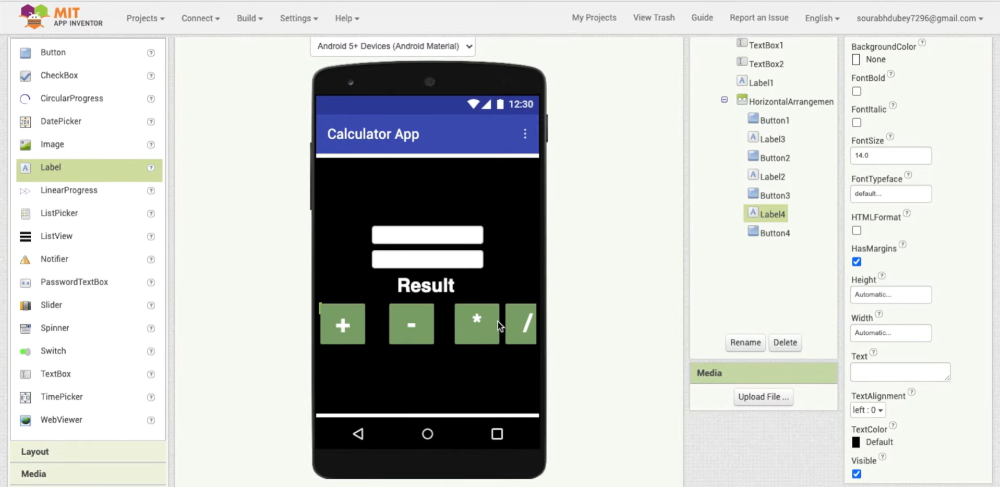
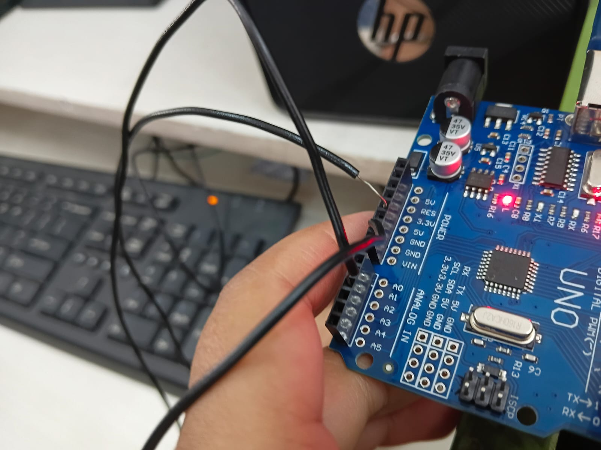

Complete lab log covering Lab 1 through Lab 6 and our final Smart Waste Segregation prototype.
Controlling LEDs on digital pins (8, 9, 10, 11) using pinMode(), digitalWrite(), loops, and delay().
LEDs wired through resistors to Arduino UNO digital pins turn HIGH (5 V) and LOW (0 V) to form single-blink, sequential, running, alternating, and all-blink patterns.
Lab 1 Demo (Muted): LED pattern demonstration on Arduino UNO.
int led[] = {8, 9, 10, 11};
void setup() {
for (int i = 0; i < 4; i++) {
pinMode(led[i], OUTPUT);
}
}
void loop() {
for (int i = 0; i < 4; i++) {
digitalWrite(led[i], HIGH);
delay(250);
digitalWrite(led[i], LOW);
}
}
Reading a rotary potentiometer on an analog pin (0–1023) with analogRead() and scaling outputs with map() and analogWrite().
Turning the potentiometer knob varies voltage between 0 V and 5 V on the wiper pin. The Arduino converts this into a 10-bit reading (0–1023) to drive PWM brightness or select modes.
Lab 2 Hardware (Muted): Rotary potentiometer wired with three jumper leads to the Arduino UNO.
const int potPin = A0;
const int ledPin = 9;
void setup() {
pinMode(ledPin, OUTPUT);
Serial.begin(9600);
}
void loop() {
int potValue = analogRead(potPin);
int brightness = map(potValue, 0, 1023, 0, 255);
analogWrite(ledPin, brightness);
Serial.println(potValue);
delay(100);
}Measuring object distance in centimetres using the HC-SR04 ultrasonic sensor and turning ON an LED based on a fixed 10 cm limit or a potentiometer-selected threshold.
A 10 µs pulse on trigPin (Pin 9) sends an ultrasonic burst, and pulseIn(echoPin, HIGH) on Pin 10 measures echo time. Distance is calculated as duration * 0.0343 / 2 in cm.
Lab 3 Sensor Test (Muted): Serial Monitor displaying measured distance and threshold values.
// LAB-3 Program: Interface HC-SR04 ultrasonic sensor, display cm on Serial Monitor,
// and turn ON LED when object is within 10 cm.
const int trigPin = 9;
const int echoPin = 10;
const int ledPin = 13;
long duration;
float distance;
void setup() {
pinMode(trigPin, OUTPUT);
pinMode(echoPin, INPUT);
pinMode(ledPin, OUTPUT);
Serial.begin(9600);
}
void loop() {
digitalWrite(trigPin, LOW);
delayMicroseconds(2);
digitalWrite(trigPin, HIGH);
delayMicroseconds(10);
digitalWrite(trigPin, LOW);
duration = pulseIn(echoPin, HIGH);
distance = duration * 0.0343 / 2;
Serial.print("Distance: ");
Serial.print(distance);
Serial.println(" cm");
if (distance <= 10) {
digitalWrite(ledPin, HIGH);
} else {
digitalWrite(ledPin, LOW);
}
delay(500);
}// Program Statement: Measure distance with HC-SR04, set threshold with potentiometer,
// and turn ON LED whenever distance < threshold.
const int trigPin = 9;
const int echoPin = 10;
const int potPin = A0;
const int ledPin = 13;
long duration;
float distance;
int potValue;
int threshold;
void setup() {
pinMode(trigPin, OUTPUT);
pinMode(echoPin, INPUT);
pinMode(ledPin, OUTPUT);
Serial.begin(9600);
}
void loop() {
// Read potentiometer and map it to 5-50 cm
potValue = analogRead(potPin);
threshold = map(potValue, 0, 1023, 5, 50);
// Trigger ultrasonic sensor
digitalWrite(trigPin, LOW);
delayMicroseconds(2);
digitalWrite(trigPin, HIGH);
delayMicroseconds(10);
digitalWrite(trigPin, LOW);
// Measure echo duration
duration = pulseIn(echoPin, HIGH);
// Calculate distance in cm
distance = duration * 0.0343 / 2;
// Display values on Serial Monitor
Serial.print("Distance: ");
Serial.print(distance);
Serial.print(" cm");
Serial.print(" Threshold: ");
Serial.print(threshold);
Serial.println(" cm");
// LED control
if (distance < threshold) {
digitalWrite(ledPin, HIGH);
} else {
digitalWrite(ledPin, LOW);
}
delay(500);
}Controlling lights/LEDs wirelessly from a smartphone Bluetooth app over serial communication to the Arduino UNO.
Commands sent from the mobile Bluetooth app (such as '1' or 'F' to turn the light ON, and '0' or 'B' to turn it OFF) are read via Serial.read() on the Arduino UNO to switch the output pin HIGH or LOW.
Lab 4 Bluetooth Demo (Muted): Toggling the control on the mobile app with the Arduino circuit active.
// Lab 4: Control light / LED via Bluetooth app serial commands
const int lightPin = 13; // Connected to LED / relay control pin
char command;
void setup() {
pinMode(lightPin, OUTPUT);
digitalWrite(lightPin, LOW);
Serial.begin(9600);
}
void loop() {
if (Serial.available() > 0) {
command = Serial.read();
if (command == '1' || command == 'F' || command == 'f') {
digitalWrite(lightPin, HIGH); // Turn light ON
} else if (command == '0' || command == 'B' || command == 'b') {
digitalWrite(lightPin, LOW); // Turn light OFF
}
}
}Designing a visual mobile application interface and event blocks in MIT App Inventor.
Built using MIT App Inventor components (input fields, action buttons, and result/status labels) to handle user input cleanly on Android.

Lab 5 Screenshot: MIT App Inventor interface layout.
Combining ultrasonic distance sensing with servo motor actuation and an indicator LED: when an object comes within 15 cm, the LED turns ON and the servo rotates to 90° before returning to 0°.
The HC-SR04 ultrasonic sensor measures distance to an object in front of it. Once the distance drops to 15 cm or less, the Arduino UNO lights the LED on pin 13 and turns the servo on pin 6 to 90° for 2 seconds, then resets back to 0°.

Lab 6 Hardware Setup: Arduino UNO board with jumper wire connections.
#include <Servo.h>
const int trigPin = 9;
const int echoPin = 10;
const int ledPin = 13;
const int servoPin = 6;
const int triggerDistanceCm = 15;
Servo gateServo;
long duration;
float distance;
void setup() {
pinMode(trigPin, OUTPUT);
pinMode(echoPin, INPUT);
pinMode(ledPin, OUTPUT);
gateServo.attach(servoPin);
gateServo.write(0);
digitalWrite(ledPin, LOW);
Serial.begin(9600);
}
void loop() {
digitalWrite(trigPin, LOW);
delayMicroseconds(2);
digitalWrite(trigPin, HIGH);
delayMicroseconds(10);
digitalWrite(trigPin, LOW);
duration = pulseIn(echoPin, HIGH);
distance = duration * 0.0343 / 2.0;
Serial.print("Distance: ");
Serial.print(distance);
Serial.println(" cm");
if (distance > 0 && distance <= triggerDistanceCm) {
digitalWrite(ledPin, HIGH);
gateServo.write(90);
delay(2000);
} else {
digitalWrite(ledPin, LOW);
gateServo.write(0);
}
delay(200);
}Mixed waste contaminates recyclables and slows down composting. Our Arduino UNO prototype separates wet and dry waste automatically at the bin lid using ultrasonic presence detection, moisture sensing, and servo actuation.
Final Project Demo (Muted): Split blue/green lid, rim ultrasonic sensor, moisture probe, and servo motor actuation.